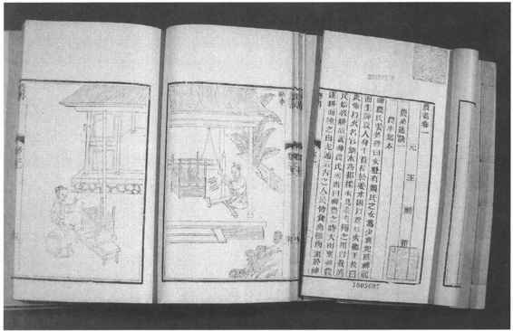

农作物种在地里，所以土地是种植业的基础。距今四五千年前，中国的农业生产在许多地区已走上了以种植业为主的道路。以后人口逐渐增多，越往后世近代人口增加越快，清代乾隆初年，中国人口已突破一亿大关。为了养活众多的人口，中国世世代代的农民，在充分利用土地上创造了值得赞叹的业绩。
增加粮食产量的一个重要办法是扩大耕地。为此，中国古代农民就开展了“向山争地”、“向水夺田”的斗争。这种斗争到明、清时期达到了高峰。战国时期，对丘陵地、平地、低洼地三种类型的土地已有所利用。到汉代，种植业比较发达的中原地区，沼泽地已基本上垦辟治理为农田。汉以后，北方人口不断向南方迁移，加上铁制农具的普遍使用，使南方地区农田的垦辟扩大也出现了新形势。
中国有广大的丘陵地带和山区，农田向山坡扩展是必然的趋势。它最主要的形式是“梯田”，在农业生产中占有重要地位。开辟梯田始于何时？有不同看法。大致梯田是由山坡田逐步发展而来，《诗经》提到的“阪田”可能就是简单的山坡田。山坡田会破坏山坡上的天然植被，引起水土流失。从严重的失败教训中人们总结出修筑梯田的办法。梯田在条件不同的地方，修筑形式和效果也有所不同。西北黄土地带，主要作用是拦截水土，当地农民的口号是“水不下原，土不下坡，泥不出沟”［54］。而南方丘陵地区的梯田则结合丰富的水源条件，表现了对于水土的高度的利用。“梯田”之名称最早见于南宋范成大的《骖鸾录》，说江西袁州“岭阪上皆禾田，层层而上至顶，名梯田”。梯田的出现当然比这要早得多，四川彭水县东汉墓出土的一块陶田模型上，丘形狭斜，丘与丘相接如鱼鳞，略呈阶梯形，研究者认为很像现今四川之梯田。［55］说明梯田在四川已有近二千年的历史了。唐代人樊绰到过云南，在所著《蛮书》中写道：“蛮治山田，殊为精好”；“浇田皆用源泉，水旱无损”［56］有人工灌溉设施，种植农作物的山田，当为梯田无疑。南宋时，梯田在江西、福建、四川等地已成为普通的田法。南宋以后，梯田仍继续发展。山坡被广泛开辟为农田，必然会形成与林、牧争地的局面。
有多种方式，主要的一种是围湖造田。低洼地方湖泊多，滨湖的土地比较肥沃，对人们特别具有吸引力。《汉书》中已记载了北方个别围湖造田的事例。魏、晋、南北朝时期，北方人口大量南移，对农田的需求急剧增加。江南地区围湖造田的活动逐渐增加。刘宋时（420—479），谢灵运先后奏请将会稽回踵湖、始宁（浙江上虞县西南）岯崲湖“决以为田”［57］。孔灵符奏请迁徙山阴（浙江绍兴）贫民到余姚、（浙江鄞县东）、鄞三县开垦湖田。［58］围湖造田，就是排放湖里的水；有的先筑起一道堤，堤的两端与陆地相连，并在适当地方开口设闸，然后把堤内水排干。从湖田衍变出的围田又叫“圩田”、“坝田”、“垸田”，主要推行于古云梦泽及沿长江的沼泽地区。《禹贡》中把荆、扬两州的土壤称为“涂泥”，属下下田。有了圩田这种巧妙的设计后，就使之变成了肥美丰产的水田。唐代著作中关于圩田的记载不多，说明尚未广为推广。到宋代，记载多了起来，北宋沈括（1031—1095）《长兴集·万春圩图记》说，万春圩在南唐以前叫“秦家圩”，“土豪秦氏世擅其利”。宋廷南渡后，大量南撤的军队屯驻在沿江一带，大规模开垦圩田。从此以后，圩田成为长江中下游广大沼泽低洼地区的重要水田类型，对促进这一地区农业生产的发展起了很大作用。不过，这种向水索地的办法，如超过了一定的合理限度，滥围滥垦，就会破坏天然的水利和生态平衡。
沙田，是南方水田地区农民向水夺田的又一方式。江河傍岸或水流中往往有沉积起来的沙滩和沙洲，土质肥沃，芦苇丛生，人们在其上辟为农田，并挖通沟渠，引水排水，也能做到水旱无忧。长江下游的人把它叫做“沙田”。据文献记载，唐代沿海农民已在靠海岸以及近岛屿边缘的泥沙堆积层上，围海造田了。王祯《农书》中称之为“涂田”，还说“其稼收比常田利可十倍”。［59］（图18—7）此外，向水夺田的方式还有葑田、架田、柜田等，都属模型式的人造田，数量少，面积小，在农业生产中没有起到多大作用。

图18-7 王祯《农书》
北方有些地区的农民在自然条件非常差，甚至种植业难以发展起来的地方，也千方百计地扩大种植面积。突出地表现在两大创举上，一是改造盐碱地，古代把盐碱地称为“斥卤”。农民创造出“赶盐”、“压盐”、“压青”、“泡茬”、“躲盐”、“放淤”等办法，把许多斥卤不毛之地改造成为能种植的农田。另一是明、清时期甘肃某些地方农民创造的特殊的土地利用法——“石子田”［60］。贫瘠多山的黄土高原降雨很少，风又大，昼夜温差变化大，水土流失严重。于是农民们设法在耕地之后，施上肥，然后运来砂石，先铺一层粗沙，再逐层铺上一层小石子和大石块。石子田因砂石下面土壤昼夜温差较小，温度较高，适于作物生长；又由于有砂石的覆盖，大大减少了土壤中水分的蒸发，降水渗入土内的水分不易流失；土壤水分保持较好，盐分不易上升，有减轻盐碱化的效果。石子田不仅保收，产量也比当地一般农田要高得多。但它建造起来很费工，而且头十年收成很好，以后产量逐渐下降，30年后必须重新改铺。这种石子田实为世界农业生产技术史上少有的一项创举。
要增加农业生产量，除扩大耕地外，最有效的办法就是设法充分合理地提高土地利用率，增加单位面积产量。美国经济学家帕金斯（D.H.Perkins）认为，从14—19世纪，中国人为提高单位面积产量，除了通常的技术措施外，改进耕作方式起了突出的作用。［61］美国育种学家布劳格（N.E.Borlang）认为，中国人创造了世界上已知的最惊人的变革之一是“遍及全国的两熟和三熟栽培，它在发展中的国家中也居于领先地位”［62］。
《周礼·地官·县师》：“辨其夫家人民、田莱之数。”东汉学者郑玄注释说：“莱，休不耕者。”反映出周代农田还盛行轮荒农作制。到春秋战国时，就开始逐渐废弃了轮荒农作制而走上了土地连种制的道路，并在此基础上又创造了轮作复种制，公元前5世纪，魏国政治家李悝提出“尽地力”之教，其实质就是设法摆脱原始的休耕制，而向连作的高级阶段发展，提高已耕农田的利用率。《荀子·富国》中说，黄河流域有的地方“人善治之”，可以“一岁而再获之”（二年三熟或一年二熟）。东汉郑玄在《周礼·地官·稻人》注释中说，他生活的那个时代，黄河流域已经流行“禾下麦”、“麦下种禾、豆”的谷、麦、豆之间轮作复种的二年三熟制。南方气候温暖，雨水充足，这一时期在汉水流域的河南南阳一带已经有了稻、麦轮作复种的一年二熟制。［63］《异物志》则记载有“一岁再种”的双季稻。宋以后，中国广大农区已经很少有闲田旷土了，人多地少的矛盾开始出现。在长江以南地区，除大规模开展修造圩田和梯田的活动外，再就是采取更为有效的措施，进一步努力提高复种指数。《吴郡图经续记》中说江苏南部种庄稼已是“刈麦种禾（水稻），一岁再熟”。岭南地区更有水稻一年两熟，一年三熟的记载。［64］“一年三熟”很可能是通过间套复种等多种方式实现的。宋以后，轮作复种制继续有所发展。
“间作”、“套种”是中国种植制度上的又一独具特色的优良传统。中国的多熟种植主要是综合运用轮作复种和间作套种的种植方式实现的。所谓“间作”、“套种”就是在同一块地里同时夹杂栽种不同的作物；或在一种作物的生长期中间，再栽种另外一种作物。这样，当前一种作物还没有收获，而后一种作物已经长起来了。它可以更充分地利用土地，使之没有空闲之时。《氾胜之书》和《齐民要术》中都提到了间作、套种，从中反映出在公元6世纪以前，这种方法还只限于使用在园艺蔬菜方面。间作、套种等复种技术在明、清时有较大的发展，方式更丰富多彩，并同轮作复种密切配合，综合运用，收效更大。1834年成书的《江南催耕课稻编》中说：“台湾百余年前种稻岁只一熟，自民食日众，地利日兴，今则三种三收矣。”《修齐直指》中详述的18世纪陕西关中地区“一岁数收之法”和“二年收十三料”之法是北方综合运用间套复种的最典型实例。作者杨屾认为这“乃人多地少，救贫济急之要法”。
作物生长发育须由土壤供给水分、养料和一部分空气。土壤的这种供给能力，叫“土壤肥力”。土壤肥力保证了人们生存必需的粮食、纤维和其他生活资料。所以古人说“地生财”［65］。战国时人们已经认识到“地可使肥，又可使棘（瘠）”［66］。随着农业生产土壤管理科学技术的提高，又进一步认识到合理利用土壤、改良土壤和培肥土壤，土壤肥力就不会减退。宋代陈敷的《农书》对此有精辟的论述，并提出了“地力常新壮”［67］这一上升到一定理论高度的土地利用原则。对人们努力提高土壤肥力，定向改造土壤，提高单位面积产量具有积极意义。
中国农民自古以来对土壤一向采取主动态度，想方设法去改良和维持它的肥力，在生产实践中逐渐形成了一套把土壤耕作，作物轮作和施肥等措施加以综合运用的方法，从而使中国的农田使用了几千年而没有衰敝。近百年来到中国的欧洲人对这一事实很是惊异。
施用有机肥料来恢复和维持地力是关键的措施。古文字学家根据对甲骨卜辞的研究，认为商代已开始给作物施用粪肥，并有了贮存人畜粪和造厩肥的方法。［68］《诗经·周颂·良耜》：“荼蓼朽止，黍稷茂之。”反映周代人们认识到使用绿肥与庄稼生长良好的必然关系。《周礼》、《孟子》、《荀子》、《韩非子》、《吕氏春秋》等书中都谈到了“多粪肥田”，以及改良土壤和对不同土壤应施不同肥料的“土化之法”和“粪种”等。《齐民要术》的记载反映了公元6世纪时的肥料种类有人粪尿，牛、羊、猪等畜粪，还有蚕粪、缫蛹汁、兽骨灰、草木灰和陈墙土。还介绍了一种造堆肥的方法——“踏粪”；强调作物要施用腐熟的熟粪：对基肥和追肥的施用法也作了具体记述，反映出施肥技术已有较高水平。
6世纪以后，在开辟肥源方面不断有新的发展，对施肥方法的改进也很突出。陈敷《农书》说：“用粪犹用药也。”在12世纪时对施肥有这样深刻的认识是值得重视的。18世纪的杨屾在《知本提纲》中总结了历代农民积累的施肥经验，发展了陈敷的认识，指出施肥要注意“时宜”、“土宜”和“物宜”，所谓“时宜”就是“寒热不同，各应其候”；所谓“土宜”就是“随土用粪，如因病下药”；所谓“物宜”是因为“物性不齐”，应“当随其情”。总之，到明、清时期，中国农田施肥技术几乎达到了经验知识的顶端，至于施肥的作用和意义也被提到前所未有的高度。在欧洲，农田施肥是比较晚的事，即使较早的国家、地区到11世纪方才开始施肥。18世纪时，法国农业在欧洲算是最先进的，可是全国农田仍有半数以上经常休闲着。听任大量土地休闲，主要是因为无法迅速恢复土壤的肥力。